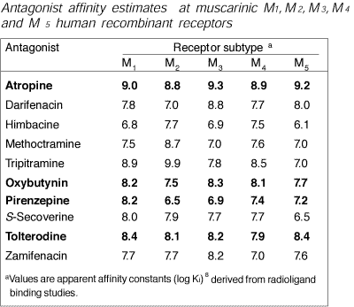

Muscarinic receptors are G protein coupled receptors on parasympathetic target cells. There are a number of subtypes of receptor, for which specific drugs are starting to be developed. The drugs currently used in veterinary practice are non-specific: atropine (an antagonist) is the only one commonly used.
Not often used except pilocarpine in the eye and bethanecol in the bladder. Muscarine itself comes from the fungus fly agaric (Amanita muscaria) which sometimes causes poisoning in animals.
Very (too?) widely used in veterinary practice to reduce secretions before anaesthesia (dubious value) and to treat bradycardia (they usually have to be given iv to be effective at this). Atropine (originally derived from deadly nightshade, Atropa belladonna) is the only drug commonly used; hyoscine (scopolamine USAN; from a numer of plants, the commonest of which in NZ is the thorn apple, Datura stramonium) is similar but crosses the blood brain barrier more easily. It produces hallucinations and sedation in people: this is not obvious in animals. Many toxic plants contain atropine or hyoscine and poisoning is fairly common. Glycopyrrolate (glycopyrronium INN) is a quaternary ammonium compound which does not cross the blood brain barrier at all: it is longer acting and is more specific for the heart. Its only drawback is price.
dry secretions, reduce salivation (effects last hours)
slow gut (effects last hours)
tachycardia (effects last minutes)
dilate pupil (effects last hours)
blurred vision (cycloplegia) (effects last days)
difficulty with urination (effects last hours)
anaesthetic premedication
in cats (and pigs?)
in conjunction with irritant anaesthetics like ether
treating gut spasm
treating bradycardia
organophosphate poisoning
glaucoma
tachycardia
cardiac disease - tachycardia reduces blood flow to the myocardium
horses - cycloplegia often causes panic
ruminants - blocks parotid secretions but not submandibular - very sticky
saliva
many rabbits possess an enzyme which breaks atropine down rapidly - it is
too short acting to be of much use in this species.
There are five muscarinic receptor subtypes. M1 & M5 receptors occur in neurones of the autonomic and central nervous systems. M1 receptors are involved in CNS excitation and memory, and in gastric acid secretion and gut motility. M2 receptors are found in the heart, where they slow depolarisation in the SA and AV nodes. There are also presynaptic M2 receptors in the brain, which reduce acetyl choline release. M3 & M4 receptors are found in smooth muscle and secretory glands where they increase secretion, contract smooth muscle and cause vasodilatation by increasing nitric oxide production.
M1, M3 and M5 receptors are stimulatory and cause calcium release via IP3; M2 and M4 receptors are inhibitory and reduce cAMP production.
Atropine blocks all muscarinic receptors, but specific drugs are being developed. Pirenzepine is a relatively specific antagonist for M1 receptors and is used in the gut to reduce acid secretion.
